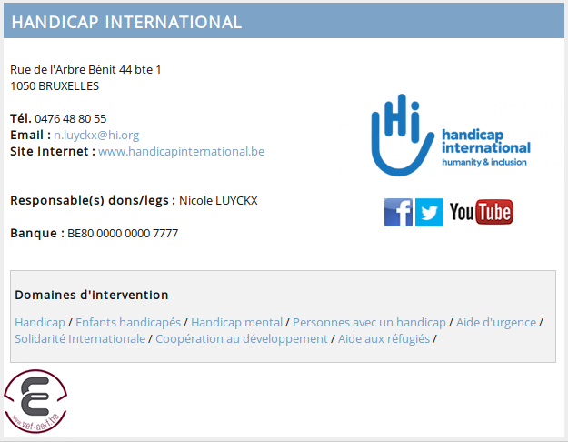

Chaque jour, les équipes de Handicap international aident les personnes handicapées des pays du Sud à pouvoir vivre de façon autonome grâce à des prothèses et de la kinésithérapie. elles veillent à ce que les enfants et adultes handicapés puissent aller à l’école ou avoir un travail. elles préviennent les causes de handicap avant la naissance grâce à des campagnes de sensibilisation. Handicap International apporte aussi son aide aux personnes handicapées et aux plus vulnérables dans les situations d’urgence. En 1997, cette organisation a été co-Prix Nobel de la paix pour son combat contre les mines antipersonnel.
Vous pouvez faire la différencepour les personnes handicapées du Sud, même quand vous ne serez plus là. En inscrivant Handicap International dans vos dernières volontés, vous leur lèguerez une vie dans la dignité.
 site officiel